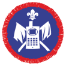

Northampton Scout Amateur
Radio Group
Radio Group

1981
2022
|
Northampton Scout Amateur
Radio Group |
|
||
|---|---|---|---|
|
1981
|
2022
|
||
|
|
|
|||
|
|
|
|
||
10:30 until 16:00 |
|
|
|

|
65th Jamboree on the Air -
65 years connecting Scouts!
15th - 17th October 2022 - The station this year will be located in the Knight's
Lodge. We have an exciting programme of Radio Scouting activities at Jamboree On The Air and
Jamboree on the Internet this year. This includes a live video feed with other Scouts around the
world,
receiving images from weather satellites and contacting other Jamboree stations using HF voice
communications. Many other aspects of the amazing world of radio communications can be experienced.
If you or your group would like to take
part please contact us by clicking the email link at the bottom of the page.
|
2022 Jota Logo; |
JOTA & Radio Scouting
Jamboree on the Air is the highlight of the Radio Scouting calendar, when Scouts have the
opportunity to share experiences and exchange ideas with some of the 1.5 million young people taking
part. This is truly the biggest Scout Jamboree in the world!
The Northampton Scout Amateur Radio Group has taken part in JOTA every year since 1981. We will be running this years event from the Knight's Lodge at the Overstone Scout Activity Centre. We will have three operating areas, including a DMR setup allowing us to communicate with Scouts and Radio amateurs all over the world using a handheld radio connected to the Internet. Digital modes using computers and radio equipment linked together. |
|
Scouts having fun at Jamboree on the Air
The picture says it all - Radio Scouting is great fun! Each of the groups visiting the 2022 station had a brief introduction.
We ran a VHF local station, HF 40/80 station for greetings messages etc. and a 10, 15, 20 meters data mode station. We had several FT8 contacts with Australia and other countries as well as many voice contacts around the world.
|
 Scouts having fun at Jamboree on the Air in 2022. One group of Scouts that visited the station during 2022. |
The 25th World Scout Jamboree
Between 1st - 12th August 2023 , the 25th World Scout Jamboree will be held in SaeManGeum,
Jeollabuk-do, Republic of Korea, more than 40,000 Scouts from all over the world will gather
together.
|
|
Radio Scouting and the Scout Training Programme
The Scout training programme provides opportunities for Radio Scouting and associated technology
based activities in all sections. Requirements for some of the Challenge Awards and the
International Friendship Award can be completed and Activity Badges
are also available. In 2014 the new Beaver Scout Communicator Badge was introduced as well as the
Digital Maker and Digital Citizen staged badges.
|

Beaver Scouts from 23rd Northampton (Headlands) Group were some of the first to take part in the new Communicator Activity badge at JOTA 2014 |
Digital Citizen & Digital Maker Staged Activity Badges
The Digital Citizen and Digital Maker staged activity badges offer a young person the opportunity of
gaining an award appropriate to their individual level of knowledge. Staged badges are available to
all sections from Beavers through to Scout Network.
|
| Activity Badge Requirements | |||
| Communicator | Communicator | Communicator | |
|  | |||
| Experiment | Electronics | Science & Technology | |
| Why not join our Facebook group for the latest
Radio Scouting news from Northampton |